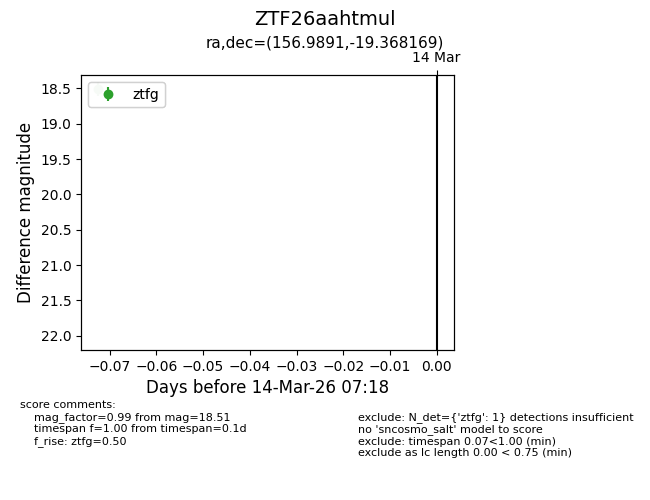
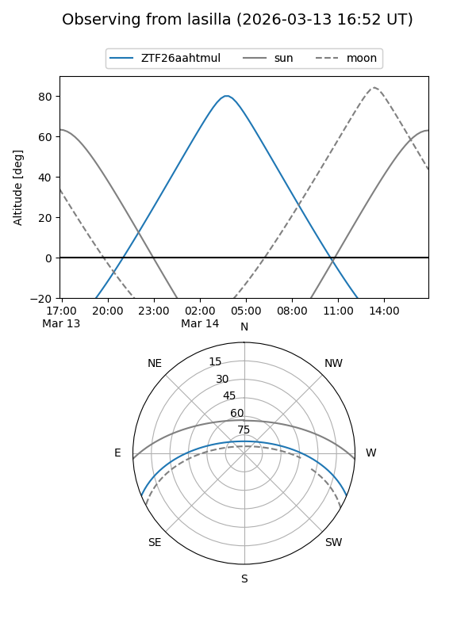
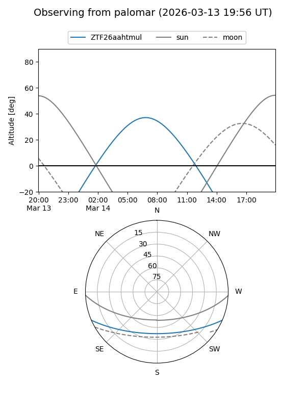

ZTF26aahtmul
Target ZTF26aahtmul at 2026-03-14 07:21
Aliases and brokers:
FINK: link
Lasair: link
ALeRCE: link
alt names
ZTF26aahtmul (ztf,fink_ztf)
Coordinates:
equatorial (ra, dec) = 156.9891,-19.36817
equatorial (HMS+DMS) = 10:27:57.38,-19:22:05.41
galactic (l, b) = (262.2788,+31.94879)
Flags:
Photometry:
last ztfg=18.51
1 ztfg detections
Lightcurve

Visibility


Additional plots